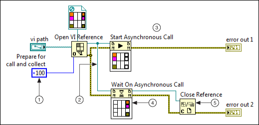
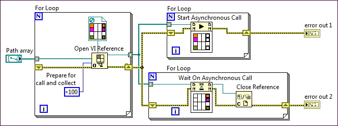

Asynchronously Calling a VI and Collecting the Results
When you open a reference for a VI that you want to call asynchronously, you must decide whether you want to collect the results of the VI later. This topic describes how to start an asynchronous call-and-collect VI call and collect the results later. Other programming languages describe this usage model as fork-and-join. Alternatively, you can call a VI without collecting its results.
What to Use
Use the following block diagram objects to dynamically start an asynchronous call to a VI and then collect the outputs of the VI at a later time:
What to Do
Create the following block diagram to asynchronously call a VI and then collect the results at a later time.

The following list describes important details about the previous diagram.
 |
Include the 0x100 flag as part of the options input of the Open VI Reference function. This option flag causes LabVIEW to create a call-and-collect VI reference to be called asynchronously and to return its results at a later time.
 |
Note The LabVIEW Help displays each of the option flags for the Open VI Reference function in hexadecimal representation. Therefore, always change the display format of the Numeric Constant input to hexadecimal to ensure that you are passing the correct value. |
|
 |
The Wait On Asynchronous Call node is associated with a Start Asynchronous Call node that uses the same VI reference as an input. |
 |
After the Start Asynchronous Call node calls the referenced VI, the rest of the calling block diagram continues executing without waiting for the referenced VI to complete. |
 |
The Wait On Asynchronous Call node waits until the VI associated with its reference input finishes executing or until the node times out. At that time, the Wait On Asynchronous Call node returns the outputs of the referenced VI, and dataflow continues along its output wires. |
 |
Close each VI reference with the Close Reference function after you use it to collect the outputs of the referenced VI. When you close a call-and-collect VI reference, LabVIEW aborts all running instances of the VI and causes all associated Wait on Asynchronous Call nodes to return error 1026. This behavior differs from closing call-and-forget VI references. |
Caveats and Recommendations
- Aborting VIs—Consider the following ramifications of aborting the VIs in this usage pattern:
- If you abort the VI that opened the call-and-collect VI reference, LabVIEW automatically closes the reference and aborts all running instances of the VI.
- If you abort a specific instance of a call-and-collect VI reference, exactly one Wait On Asynchronous Call node returns an error indicating that the called VI aborted. All other Wait On Asynchronous Call nodes that are waiting on calls to the same VI reference continue waiting.
- If you call the Abort method on a call-and-collect VI reference, LabVIEW aborts all currently running instances of the VI. A corresponding number of Wait On Asynchronous Call nodes return errors.
- When the VI that opened the call-and-collect VI reference finishes executing, LabVIEW automatically closes the reference and aborts all running instances of the VI.
- If you start multiple asynchronous calls to the same VI reference, you cannot directly identify which VI call returns its outputs to a specific Wait On Asynchronous Call node. Assign an identifier to a VI call if you need to know which instance of the VI returned.
Variation: Collecting Outputs from Multiple Calls to Unique VI References
The following block diagram provides a template for calling multiple VIs asynchronously and then collecting their outputs. Because each asynchronous call is associated with a unique VI reference, each Wait On Asynchronous Call node waits for a specific VI call to finish. This template is particularly useful for creating user interfaces with subpanels whose contents represent the front panels of separate subVIs.

Examples
Refer to the Asynchronous Call and Collect VI in the labview\examples\Application Control\VI Server\Asynchronous Call By Reference directory for an example of asynchronously calling a VI and collecting its results later.
 Open example
Open example  Find related examples
Find related examples
 Add
Add